Diagnosing and Mitigating Retrieval Bottlenecks in LLM-Based Cold-Start Recommendation 精读笔记
这篇论文讨论的是 LLM 冷启动推荐里一个容易被评测掩盖的问题：很多工作把大模型放在推荐链路末端做 reranker，然后在已经注入正确物品的候选池里评估它能不能把正确物品排到前面；但真实线上链路里，正确物品必须先被召回。论文一作 Zhe Dong 来自 University of Maine at Presque Isle，合作作者来自 Stanford University 和独立研究者。论文入口为 arXiv:2606.29947，代码与数据已在文中给出：GitHub dongzhe1/rec-diag-bench 的 0.0.0 tag，以及 Zenodo data DOI 10.5281/zenodo.20991039、code DOI 10.5281/zenodo.20993306。
LLM reranker 只能重排已经进入候选池的物品；如果冷启动场景中的正确 item 从未被 retriever 召回，扩大 LLM、改 prompt 或加入更多重排侧语义理解都无法恢复这个漏召。本文要解决的核心矛盾，就是把“LLM 会不会重排”与“候选生成能不能覆盖目标”拆开诊断。
1. 背景和问题
LLM4Rec 近几年有一个很自然的想象：传统协同过滤、序列推荐和图推荐依赖交互历史，所以到了新用户、新物品、长尾内容时信号稀疏；LLM 读得懂标题、描述、新闻正文、餐馆文本和用户历史摘要，似乎正适合弥补冷启动。问题在于大多数推荐系统不是让 LLM 从全库里直接生成候选，而是先由轻量 retriever 召回几百个候选，再让 LLM 做 reranking。这个架构把瓶颈放在了上游：LLM 的语义判断再强，也只能在候选池内部交换顺序。
作者认为，许多评测把这两个环节混在一起，甚至在 candidate-injected 或 gold-injected setting 下评估 LLM reranker。正控设置本身不是错，它能回答“如果正确物品已经在池子里，模型能不能识别它”；但它不能回答“真实检索阶段是否把正确物品带进池子”。对冷启动推荐尤其如此，因为时间切分下很多测试目标是训练前缀中没有任何交互的新物品。协同过滤的 item embedding、共现边、LightGCN 邻接关系和序列模型记忆都无法直接覆盖这些目标，文本检索虽然可用，但用户历史与巨大 catalog 中的 item text 对齐仍然很弱。
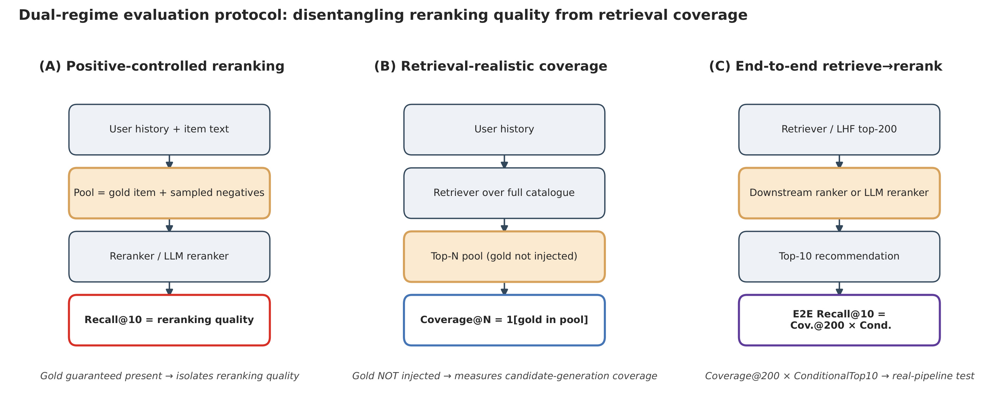
Figure 1 把论文的评测问题讲得很清楚：左侧 positive-controlled reranking 直接把 gold item 和 sampled negatives 放入候选池，只看 reranker 能否排序；中间 retrieval-realistic coverage 不再注入 gold item，让 retriever 面对完整 catalog 返回 top-N，并用 gold 是否进入池子定义覆盖；右侧 end-to-end retrieve-then-rerank 才接近真实链路，因为它要求 top-200 pool 先含有目标，再由下游 ranker 或 LLM 争取 top-10。论文的贡献不只是换一个模型，而是把实验协议改成能定位责任：如果 Coverage@200 很低，reranker 的 Recall@10 再高也到不了用户面前；如果 Coverage@200 已经有一定水平但 LLM 后处理让 top-10 变差，问题就转移到重排器和 behavioral signal 冲突。
这种拆分直接导向两个指标。作者用下面的 coverage 指标表示候选生成是否成功：
符号解释：$N$ 是候选池截断长度，论文主文大量使用 $N=200$；$\mathrm{pool}_N$ 是 retriever 给某个用户或请求返回的前 $N$ 个候选集合；$\mathbf{1}[\cdot]$ 是指示函数，gold item 出现在候选池里取 1，否则取 0。这个指标不关心池内排序，只回答“目标有没有被召回”。
端到端 Recall@10 被作者拆成 coverage 与条件重排能力的乘积：
符号解释：$\mathrm{Cov@200}$ 是 gold item 被 top-200 候选池覆盖的概率；$\mathrm{Cond@10}$ 是在 gold 已经被覆盖的条件下，reranker 把它放进 top-10 的概率。这个公式让论文的判断变得很尖锐：如果 $\mathrm{Cov@200}$ 只有 0.05，即使条件重排做到 0.5，端到端 Recall@10 也只有 0.025；因此冷启动推荐里的第一优先级可能不是“让 LLM 更会排”，而是“让候选池先把新物品召回”。
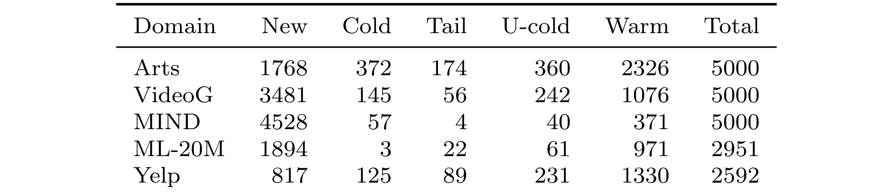
Table 1 是本文问题成立的基础证据。五个公开域里，item-new 目标在 MIND 中达到 4528/5000，在 Amazon Video Games 中达到 3481/5000，在 ML-20M 中也有 1894/2951。item-new 的定义是目标 item 在训练交互中为零，所以它不是“交互少但还有一点历史”的 tail item，而是对协同检索几乎没有直接协同信号的对象。这里的关键不是某个数据集偶然偏冷，而是 temporal split 把真实业务里“新内容不断进入 catalog”的问题显式暴露出来。对推荐系统工程来说，这意味着只在 warm 或 injected candidate 上验证 LLM reranker，很可能会高估它对冷启动主矛盾的帮助。
2. 方法
论文方法部分可以理解成两层：第一层是诊断协议，把重排和召回分离；第二层是一个 retrieval-side realizability baseline，作者称为 LHF，即 learned hybrid fusion。LHF 不是一个复杂深模型，而是一个用 validation split 训练的融合层，目标是判断多个 retriever 各自召回的 union pool 中哪些候选更值得进入 top-200。它的价值在于证明：候选生成侧确实还有可利用的互补信息，但这个互补信息需要在 retrieval side 学习，而不是简单交给 prompt-level LLM 在最后一层重排。
2.1 从候选注入到真实检索：先拆责任再看模型
作者首先固定五个公开域，并用时间顺序做 70/10/20 train/validation/test 切分。训练前缀之后才出现的测试交互全部被作为未来请求处理；catalog 中 item metadata 只要在请求时间前可用，就允许被文本检索使用，但 post-training interactions 不允许泄露进训练特征。这一点很重要：它保证 item-new 虽然没有交互历史，但不是完全不可见，文本和 metadata 仍可能成为内容检索的依据。
在 reranking 侧，论文比较 popularity、item-kNN、LightGCN、graph/content fusion、cross-encoder、Qwen3-8B、Qwen3-32B 和 Llama-3.3-70B 等模型。LLM 候选通过 calibrated “Yes” answer 的 log-probability 打分。作者还检查了 uniform negatives、popularity-weighted negatives、pointwise yes/no、0-100 scoring、listwise top-10 等 prompt/negative sampling 变体。这个设计的目的不是找到一个最炫的 LLM prompt，而是确认：即使在对 LLM 相对友好的 controlled pool 中，结论也会受采样和 traffic weighting 影响；而一旦回到真实 retrieval，coverage 才是更稳定的上游约束。
2.2 LHF：把多检索器互补性变成可执行的候选池
LHF 的出发点来自 Figure 2：不同检索器确实找到不同目标，oracle union 远高于单个 retriever，但启发式融合很难把这个 headroom 落成真实 coverage。RRF、round-robin 和 CARA 都是人工规则，无法稳定判断某个请求应该信任协同、文本、dense encoder 还是图共现。LHF 的核心机制是把“选择哪个 retriever 的证据”变成一个服务时可执行的 supervised fusion 问题，而不是把所有候选无差别交给末端 LLM。
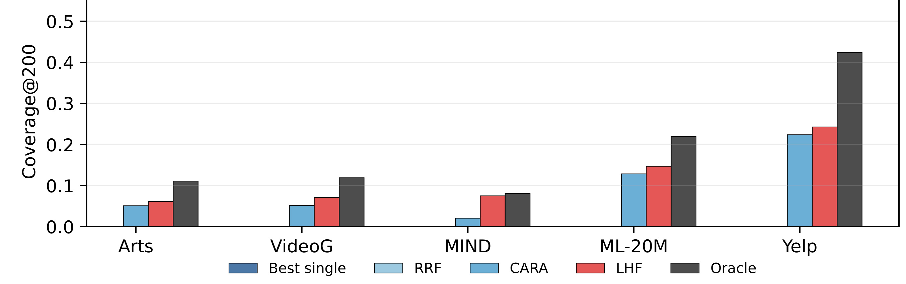
Figure 2 显示，LHF 是作者测试中唯一在五个域都超过 best single retriever 的 combiner，但它离 oracle 仍有明显距离。MIND、VideoG、Arts 等内容更重要的域里，LHF 比 RRF/CARA 更能利用文本和 metadata；ML-20M、Yelp 这类协同强的域中，oracle union 仍然很高，LHF 只吃掉一小部分 headroom。这个现象给方法章定了边界：LHF 不是“解决冷启动”的最终模型，而是一个可实现的检索侧上界/基线，用来说明候选池里确实有可学习信号，同时也暴露当前融合仍无法完全逼近 oracle。
为了读懂作者关于 headroom 的说法，可以把 LHF 的回收比例写成：
符号解释：$\mathrm{Cov}_{\mathrm{best}}$ 是最强单检索器的 coverage，$\mathrm{Cov}_{\mathrm{LHF}}$ 是 LHF 融合后的 coverage，$\mathrm{Cov}_{\mathrm{oracle}}$ 是所有标准检索器 union 后只要命中即算成功的 oracle coverage。这个表达不是论文编号公式，而是对 Figure 2 和 Table 4 中“回收 oracle headroom”叙述的读表方式；分母表示理论互补空间，分子表示 LHF 真正转化出来的覆盖增益。
2.3 特征边界：只用服务时可得证据，避免把验证/测试交互偷进来
LHF 的特征并不神秘，但它的边界很关键。它会收集每个 retriever 对用户-候选对的 ranks、scores、present flags，计算 hit count、min/mean rank，再加入用户历史长度、user-cold 标记、item popularity、item-new/cold 标记和 item text length/metadata。这些信号来自训练快照、catalog metadata 或当前请求的 retriever outputs，而不是 validation/test 中目标事件之后才知道的信息。
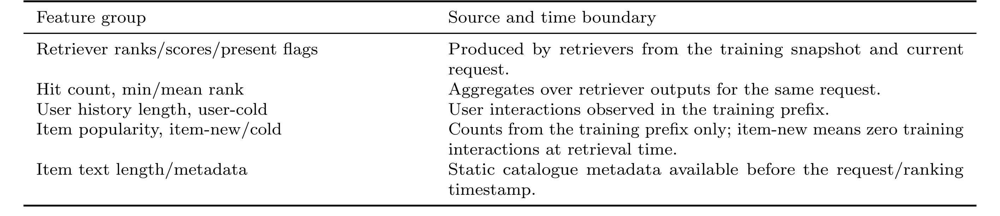
Table 5 的意义在于防止一个常见误读：LHF 不是把未来点击标签塞进候选生成，而是在 serving time 可重现的特征上学习一个融合函数。比如 item-new 标记来自训练前缀中该 item 的交互计数为零；retriever ranks/scores 是当前请求各个检索器实际输出；item text length/metadata 是请求前已经存在的静态 catalog 信息。对工程复现来说，这张表比模型类别更重要，因为它定义了 LHF 可以被放在线上召回服务前半段，而不是一个离线 oracle。
作者在 Table 6 中给出 LHF 的过程，核心候选 union 可以写成：
符号解释：$u$ 是用户或请求上下文，$\mathcal{R}$ 是 retriever bank，$\mathrm{TopN}_r(u)$ 是检索器 $r$ 为 $u$ 返回的前 $N$ 个候选，$C_u$ 是多个检索器结果的并集。这个并集通常比单个 retriever 更大，也包含更多互补候选，LHF 的任务就是在这个并集里选出最终 top-N，而不是盲目把所有候选交给下游。
LHF 对 union 中的每个候选打分：
符号解释：$i$ 是候选 item，$\phi(u,i)$ 是上面那些 retriever evidence 与 serving-time metadata 组成的特征向量，$f_\theta$ 是按 domain 训练的 GBDT classifier，$\hat{s}(u,i)$ 是候选进入 fused pool 的分数。训练时，validation gold items 如果被 union 覆盖就作为 positives，同一用户的其他 union candidates 作为 in-pool negatives；测试时按 $\hat{s}$ 返回 top-N。这个训练目标没有被论文写成深度学习 loss，但过程明确体现了一个想法：用验证集学习“哪些检索证据组合在当前域里可信”。
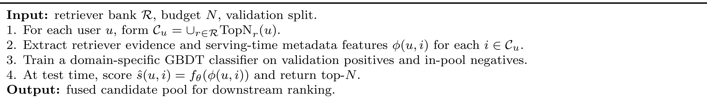
Table 6 把 LHF 的输入、处理和输出压缩成四步。第一步扩大候选空间，第二步把多检索器证据和 metadata 显式化，第三步用 validation positives/in-pool negatives 学一个 domain-specific GBDT，第四步在 test time 直接给候选打分并返回 top-N。这里最值得注意的是 LHF 位于候选生成侧，而不是 reranker 侧：它返回的是 fused candidate pool，因此可以提高 $\mathrm{Cov@200}$ 的上限；如果只在 LLM prompt 里加入 side signal，它仍然受制于候选池是否已经包含正确 item。这个流程也解释了为什么论文把 LHF 称为 retrieval-side realizability baseline：它没有假设未来交互可见，也没有要求 LLM 逐候选推理，只证明在已存在的 retriever bank 上，validation 学到的轻量融合可以把一部分互补候选真正变成可用覆盖。
2.4 覆盖感知训练暴露 tradeoff，而不是免费午餐
作者还做了 coverage-aware training：把 item-new positives 加权 5 倍，观察新物品覆盖和 warm 覆盖的变化。这不是简单追求总体 coverage 的 trick，而是在说明冷启动优化有真实 tradeoff。item-new 覆盖提升时，warm coverage 可能下降；如果业务天然以新物品为主，这个 tradeoff 可能值得；如果 warm 价值高，则需要按业务目标重新调权。论文没有把这部分写成一个新的复杂算法，但它给 LHF 一个可调旋钮，也说明“冷启动覆盖”不能只用平均 Recall 概括。
3. 实验结果
实验部分的结论可以按三步读：第一，gold-injected positive-controlled 设置下，LLM reranker 并没有稳定击败传统 baseline；第二，真实 retrieval 设置下，single retriever 的 top-200 coverage 极低，覆盖率才是主瓶颈；第三，LHF 能提高候选池质量，但同一个更好的候选池交给 prompt-level LLM 后仍经常不如轻量 learned ranker。
3.1 正控重排：LLM 有语义能力，但不是稳定赢家
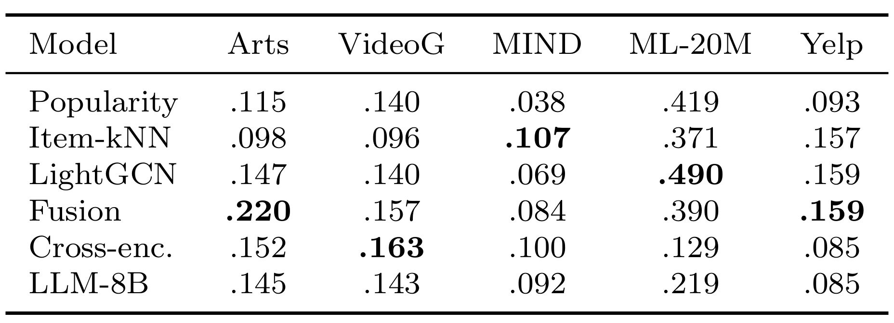
Table 2 固定 gold item 已经在候选池里，所以它只考察排序能力。结果并不支持“LLM reranker 天然解决冷启动”的强说法：LLM-8B 在五个域都没有成为最优；Arts 是 Fusion 最好，VideoG 是 Cross-encoder 最好，MIND 是 Item-kNN 最好，ML-20M 是 LightGCN 最高，Yelp 则 Fusion/LightGCN 更强。MIND 这类 text-rich news 场景下，LLM 接近强 baseline，但这仍是 gold 已经被注入的理想化场景。换句话说，这张表证明 LLM 有某些语义冷启动能力，却没有证明真实推荐链路会因此受益。更关键的是，这些数值会被 negative sampling 和 traffic weighting 改写，因此正控重排只能作为隔离诊断，不能单独支撑线上候选生成是否充分的结论。
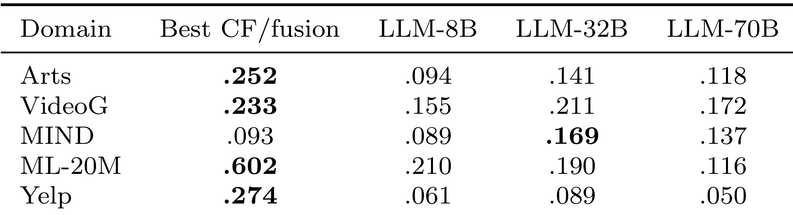
Table 3 进一步看扩参能否修复问题。Qwen3-32B 相比 8B 在 Arts、VideoG、MIND、Yelp 多数有提升，MIND 甚至超过 best CF/fusion；但在 Arts、VideoG、ML-20M、Yelp 四个域仍输给 best CF/fusion，Llama-70B 的 cross-family check 也没有形成一致优势。论文在这里的判断比较克制：扩大同一家族模型会缩小 gap，但不能把重排问题直接变成“参数越大越好”。对推荐工程而言，这意味着把线上延迟和成本都押在更大 LLM reranker 上，必须先证明上游 coverage 足够高，并且 LLM 在该域确实能利用文本优势。否则扩参只是在候选池已成功的少数样本上改善条件排序，对大量未覆盖请求没有任何恢复能力。
3.2 真实检索：Coverage@200 才是最硬的瓶颈
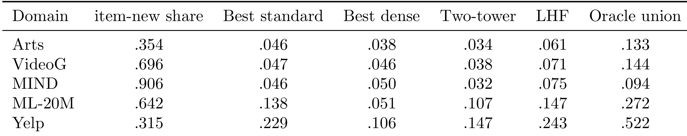
Table 4 是整篇论文最关键的证据。best standard single retriever 的 Coverage@200 在 Arts、VideoG、MIND 只有 .046、.047、.046，ML-20M 为 .138，Yelp 为 .229。即使加入强 dense encoder 和 frozen two-tower，覆盖问题仍没有消失；LHF 能把覆盖提升到 .061、.071、.075、.147、.243，但绝对值仍然很低。这个结果直接解释了为什么正控 reranking 不能代表真实链路：如果 MIND 的候选池只有 7.5% 的测试事件包含 gold item，那么后面即便有强 reranker，端到端 top-10 上限也非常低。
这张表也显示了冷启动的域差异。MIND item-new share 高达 .906，因此内容信号更重要，LHF 相对 best standard 的增益也更明显；Yelp 的 oracle union 很高，说明多个 retriever 找到了大量互补目标，但 LHF 只把 .229 提升到 .243，仍有很大未实现空间。作者没有把 dense retrieval 说成没用，而是指出它不能单独解决大 catalog 下 user-to-item semantic matching 的难题。对召回系统来说，这提示后续工作应当在 candidate generation 阶段融合交互、文本、metadata、时间边界和新物品策略，而不是只在排序末端接一个 LLM。
3.3 LHF 有用，但它揭示的是检索侧权衡
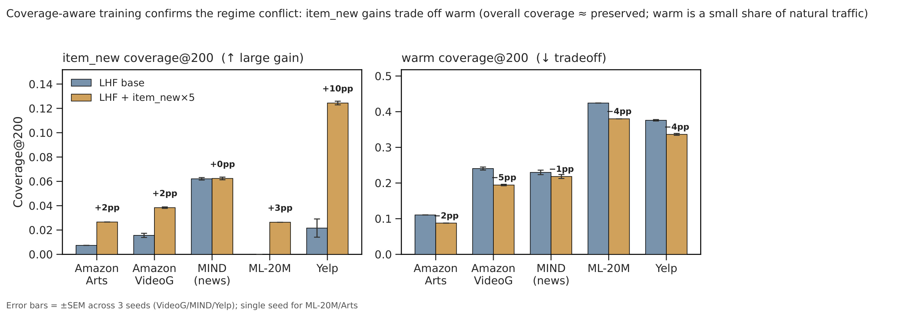
Figure 3 展示 coverage-aware training 的直接效果：把 item-new positives 加权 5 倍后，新物品 coverage 在 Yelp 上提升约 10 个百分点，在 Amazon Arts、VideoG、ML-20M 也有不同程度提升；但 warm coverage 在多个域下降，尤其 VideoG 和 Yelp 都有约 4-5 个百分点损失。这个图让 LHF 从“一个更好 combiner”变成一个可调的 retrieval policy：如果业务目标是新内容冷启动、新闻时效或长尾探索，可以接受 warm 侧损失；如果业务目标是稳定高频消费，则不能只追新物品 coverage。这种 tradeoff 是召回阶段的业务决策，不是 LLM reranker 能在最后一层自动补齐的。
作者还给出 feature ablation：去掉 cold-start metadata 时，MIND 的 LHF coverage 从 .075 降到 .035；去掉 text retrievers 时进一步降到 .019，低于 best single。这个结果说明 LHF 的价值来自“按请求路由到合适证据源”，不是简单平均或堆更多候选。特别是 MIND 这种新内容极多的域，text retriever 和 metadata 是新 item 能被召回的关键；但在协同强的域，去掉某些文本特征影响较小，说明方法的收益结构高度依赖域。
3.4 端到端：更好的候选池并不自动适合 LLM 重排
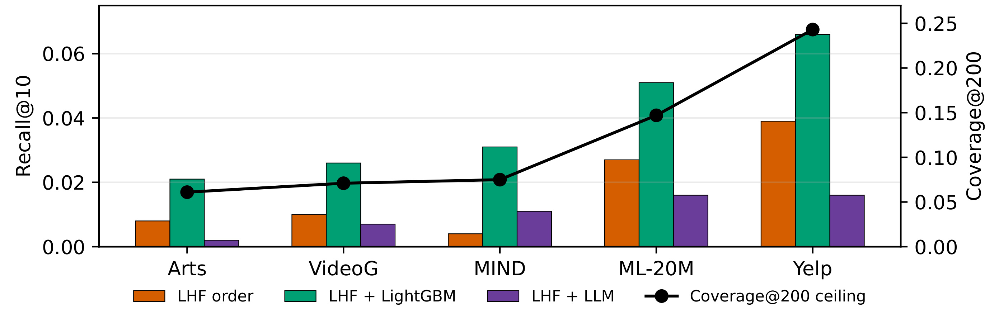
Figure 4 解决一个关键反驳：如果 LHF pool 的覆盖率提高了，是否只要把它交给 LLM 就能得到更好 top-10？结果是否定的。作者在同一 LHF top-200 pool 和同一 1000 个 LLM-scored users 上比较 LHF 原顺序、validation-trained LightGBM downstream ranker 和 LLM reranker。LightGBM 在五个域都把 Recall@10 提高 1.3-2.7 个百分点；LLM reranker 不仅没有显著改善，多数情况下还会退化，Yelp 和 Arts 尤其明显。
这个实验把失败位置进一步定位：候选池不是完全无用，因为 LightGBM 能从中取出更好的 top-10；语义信号也不是完全无效，因为正控和 MIND 场景说明 LLM 有一定文本判断能力。真正的冲突在于 prompt-level LLM 太晚介入，它面对的是已经包含行为、协同、文本和 metadata 混合信号的候选池，却只能用 prompt 侧表示去重排，容易把行为上已经强的候选降权。换成推荐系统语言，这不是“LLM 不懂语义”，而是“LLM 末端重排与上游检索/行为排序的目标不一致”。
3.5 Prompt side-signal 和成本：补 prompt 不等于补召回
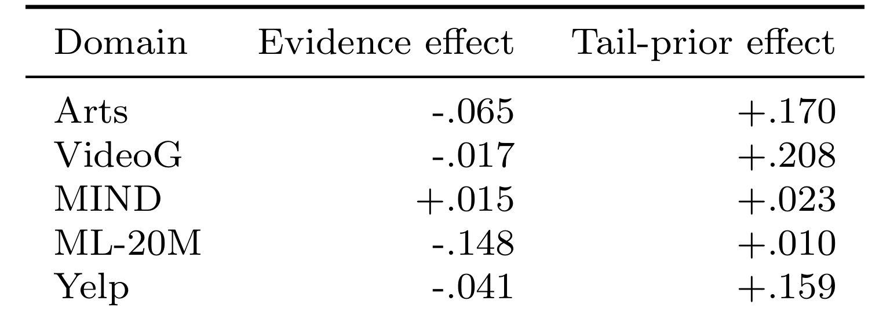
Table 7 审计 GraphPrompt+Tail 变体。表面上，加入图证据和 tail bonus 可能改善某些 stratified subset；但分解后，graph evidence effect 在 Arts、VideoG、ML-20M、Yelp 为负，只有 MIND 略正，很多 apparent gain 来自 tail-prior effect。这个结果很重要，因为它提醒我们：prompt 中加入 side signal 很容易制造看起来合理的局部提升，尤其在 tail-heavy 子集上；但这些提升不一定能转化为自然流量收益，也不一定真的来自图结构理解。作者因此把未来方向指向 retrieval coverage、learned candidate generation 和 lightweight downstream ranking，而不是继续堆 prompt-only reranking。
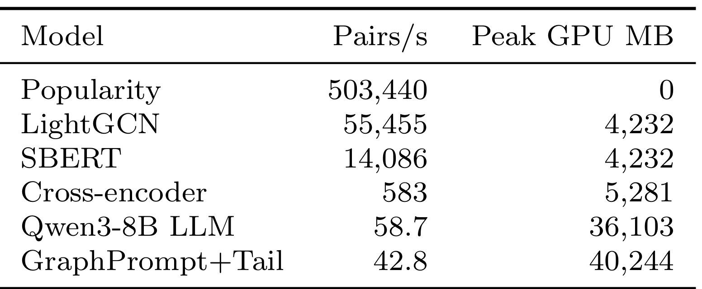
Table 11 把成本问题讲得很直接。在 Amazon Video Games candidate pairs 上，Popularity 每秒 503,440 pairs，LightGCN 每秒 55,455 pairs，SBERT 每秒 14,086 pairs；Qwen3-8B LLM 只有 58.7 pairs/s，峰值 GPU 显存 36,103 MB，GraphPrompt+Tail 更慢且显存更高。结合前面的端到端结果，这个成本表不是附带信息，而是实践判断的关键：如果一个 LLM reranker 在真实 retrieve-then-rerank 中经常不能提升甚至退化，那么它的在线成本就很难被“冷启动语义能力”这一直觉 justify。更合理的使用方式可能是离线生成 item representation、训练 retrieval/ranking supervision、做候选生成辅助，而不是把大模型直接放在高 QPS reranking 末端。
3.6 证据边界
这篇论文的实验也有明确边界。LLM reranking 因成本原因在 sampled subsets 上评估，虽然作者用 paired tests 和 1000-user expanded runs 降低了偶然性，但它仍不是完整线上流量实验。LHF 和 downstream LightGBM 都在 validation 数据上训练、held-out test 上评估，作者明确不声称这是一个嵌套的生产训练协议。Qwen3 8B 到 32B 是比较干净的同家族 scale axis，Llama-70B 是 cross-family 4-bit check，不代表所有闭源或更强模型。更重要的是，LHF 只是 retrieval-side mitigation，不是 fully optimized production candidate generator；论文真正建立的是诊断框架和瓶颈证据，而不是宣布某个融合器已经解决冷启动推荐。
4. 总结
我的判断是，这篇论文的价值在于把 LLM4Rec 中一个常被“好看的重排实验”掩盖的问题重新放到链路层面：冷启动推荐的主瓶颈经常不是 reranker 不够聪明，而是 retriever 没有把目标新物品带进池子。作者没有否认 LLM 的语义能力，反而通过正控实验承认它在 text-rich domain 有优势；但他们证明这种优势在真实 retrieve-then-rerank pipeline 中常常不可达，甚至可能被末端 prompt-level reranking 消耗掉。
对工程落地来说，第一条启发是评测必须分层。上线前至少要同时报 $\mathrm{Coverage@200}$、conditional top-10、end-to-end Recall@10，以及 item-new/warm/tail/user-cold 分桶指标。只看 reranking Recall@10，尤其是在 injected candidates 上看，会误导模型选择。第二条启发是 LLM 更适合前移到 retrieval/candidate generation 侧，例如蒸馏 item text encoder、生成新物品语义标签、构造 cold-start metadata、辅助训练 lightweight fusion/ranker，而不一定适合在线末端逐候选 prompt scoring。第三条启发是召回融合需要可服务的特征边界：LHF 虽然简单，但它明确了哪些特征来自训练快照、哪些来自当前 retriever outputs、哪些来自 catalog metadata，这比事后把未来信息混入实验更有工程可信度。
局限也需要记住。第一，五个公开域覆盖了不同推荐形态，但仍不能等价于所有生产场景；短视频、多模态内容流和广告检索可能有更复杂的曝光、探索和新物品治理。第二，LHF 依赖 validation coverage 和 in-pool negatives，真实生产中需要 cross-fitting、在线校准或时间滚动训练，避免 validation policy 与线上分布错位。第三，作者测试的 LLM prompt 和模型族有限，更强的专门化 reranker 或 listwise training 可能缩小差距，但它仍受 coverage 上限约束。第四，成本表只在一个硬件和一个 pipeline 上测量，实际服务可用 batching、caching、quantization 或 distillation 改善，但改善成本不等于修复候选漏召。
后续值得跟进三件事。第一，把 LHF 思路扩展到真正多模态 retriever bank，比较文本、图像、行为图、作者/店铺/新闻源 metadata 在 item-new 场景中的互补性。第二，用 LLM 离线生成的 item/user semantic features 训练 retrieval-side fusion，而不是直接做 online prompt reranking，检验是否能提高 Coverage@200 且不牺牲 warm coverage。第三，在生产 replay 或 shadow traffic 中同时记录“gold not covered”和“covered but reranker missed”的错误分解，让模型迭代围绕链路瓶颈而不是围绕单点 leaderboard。本文最值得保留下来的结论可以概括为：冷启动推荐里的 LLM 机会不在最后一层炫技式重排，而在更早的候选生成、语义表示和可校准融合。
如果把这篇论文放进长期推荐系统技术栈里，我会把它当作一个评测规范提醒，而不只是一个 LHF 方法记录。任何声称“LLM 改善冷启动”的方案，都应该先给出时间切分、候选覆盖率、候选池条件重排、自然流量重加权和服务成本五类证据；如果只展示注入候选后的 top-k 排序，最多只能说明模型会读文本，不能说明它能解决真实冷启动链路。这个要求对后续读 LLM4Rec 论文很有用：先问目标物品有没有进入池子，再问大模型有没有把它排上去，最后才讨论 prompt、参数规模和 side signal。